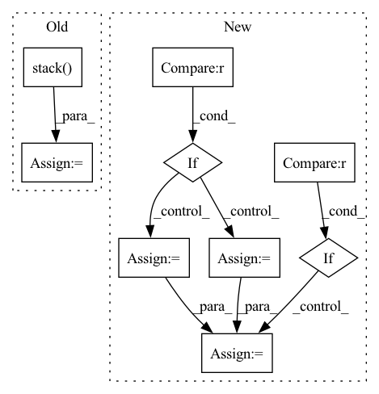

Pattern ID :7585
Before Change
bin_mask = segmask_array_iter == int(_class)
bin_mask = bin_mask.long()
one_hot_stack.append(bin_mask)
one_hot_stack = torch.stack( one_hot_stack)
batch_stack.append(one_hot_stack)
batch_stack = torch.stack(batch_stack)
if batch_stack.shape[-1] == 1:
batch_stack = batch_stack.squeeze(-1)After Change
// we always ensure the append happens in dim 0, which is blank
bin_mask = bin_mask.unsqueeze(0)
if one_hot_stack is None :
one_hot_stack = bin_mask
else:
one_hot_stack = torch.cat((one_hot_stack, bin_mask))
if batch_stack is None :
batch_stack = one_hot_stack
else:
batch_stack = torch.stack([batch_stack, one_hot_stack])
// always ensure we are returning a tensor with batch_size encodedIn pattern: SUPERPATTERN
Frequency: 4
Non-data size: 9
Instances Fragment ID: 25268355
Project Name: cbica/gandlf
Commit Name: 7e55f84b996834a00df755fe6620a3f514b044d8
Time: 2021-10-04
Author: sarthak.pati@hotmail.com
File Name: GANDLF/utils/tensor.py
M Class Name: AnonimousClass
N Class Name: AnonimousClass
M Method Name: one_hot(2)
N Method Name: one_hot(2)
M Parent Class:
N Parent Class:
M File Name: GANDLF/utils/tensor.py
N File Name: GANDLF/utils/tensor.py
M Start Line: 20
M End Line: 53
N Start Line: 20
N End Line: 62
Before Change
return dense_to_sparse(adj)
else:
idxs = np.nonzero(adj)
edge_index = np.stack( idxs)
edge_weights = adj[idxs]
return edge_index, edge_weights
After Change
assert 2 <= adj.ndim <= 3
assert adj.shape[-1] == adj.shape[-2]
if backend is torch :
adj = torch.transpose(adj, -2, -1)
index = adj.nonzero(as_tuple=True)
else:
adj = np.swapaxes(adj, -2, -1) // transpose
index = adj.nonzero()
edge_attr = adj[index]
if len(index) == 3 :
batch = index[0] * adj.shape[-1]
index = (batch + index[1], batch + index[2])
edge_index = backend.stack(index, 0) Fragment ID: 25268357
Project Name: torchspatiotemporal/tsl
Commit Name: 50089afdf23de12eb6d11e9d5e7e64d949d45611
Time: 2022-08-18
Author: ivan.marisca@hotmail.it
File Name: tsl/ops/connectivity.py
M Class Name: AnonimousClass
N Class Name: AnonimousClass
M Method Name: adj_to_edge_index(2)
N Method Name: adj_to_edge_index(1)
M Parent Class:
N Parent Class:
M File Name: tsl/ops/connectivity.py
N File Name: tsl/ops/connectivity.py
M Start Line: 92
M End Line: 114
N Start Line: 106
N End Line: 145
Before Change
return dense_to_sparse(adj)
else:
idxs = np.nonzero(adj)
edge_index = np.stack( idxs)
edge_weights = adj[idxs]
return edge_index, edge_weights
After Change
assert 2 <= adj.ndim <= 3
assert adj.shape[-1] == adj.shape[-2]
if backend is torch :
adj = torch.transpose(adj, -2, -1)
index = adj.nonzero(as_tuple=True)
else:
adj = np.swapaxes(adj, -2, -1) // transpose
index = adj.nonzero()
edge_attr = adj[index]
if len(index) == 3 :
batch = index[0] * adj.shape[-1]
index = (batch + index[1], batch + index[2])
edge_index = backend.stack(index, 0) Fragment ID: 25268356
Project Name: torchspatiotemporal/tsl
Commit Name: f28e5a2fddc34eeb90a13c113512c8ab12b6138b
Time: 2022-07-20
Author: ivan.marisca@hotmail.it
File Name: tsl/ops/connectivity.py
M Class Name: AnonimousClass
N Class Name: AnonimousClass
M Method Name: adj_to_edge_index(2)
N Method Name: adj_to_edge_index(1)
M Parent Class:
N Parent Class:
M File Name: tsl/ops/connectivity.py
N File Name: tsl/ops/connectivity.py
M Start Line: 92
M End Line: 114
N Start Line: 106
N End Line: 145